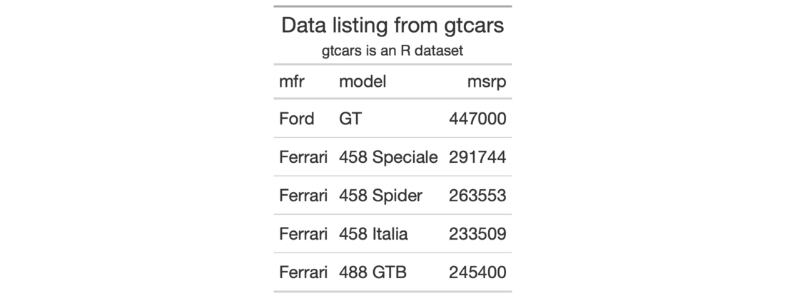

We can add a table header to the gt table with a title and even a subtitle. A table header is an optional table part that is positioned above the column labels. We have the flexibility to use Markdown formatting for the header's title and subtitle. Furthermore, if the table is intended for HTML output, we can use HTML in either of the title or subtitle.
tab_header(data, title, subtitle = NULL)
| data | A table object that is created using the |
|---|---|
| title, subtitle | Text to be used in the table title and, optionally, for
the table subtitle. We can elect to use the |
An object of class gt_tbl.

2-1
Other Create or Modify Parts:
tab_footnote(),
tab_options(),
tab_row_group(),
tab_source_note(),
tab_spanner_delim(),
tab_spanner(),
tab_stubhead(),
tab_style()